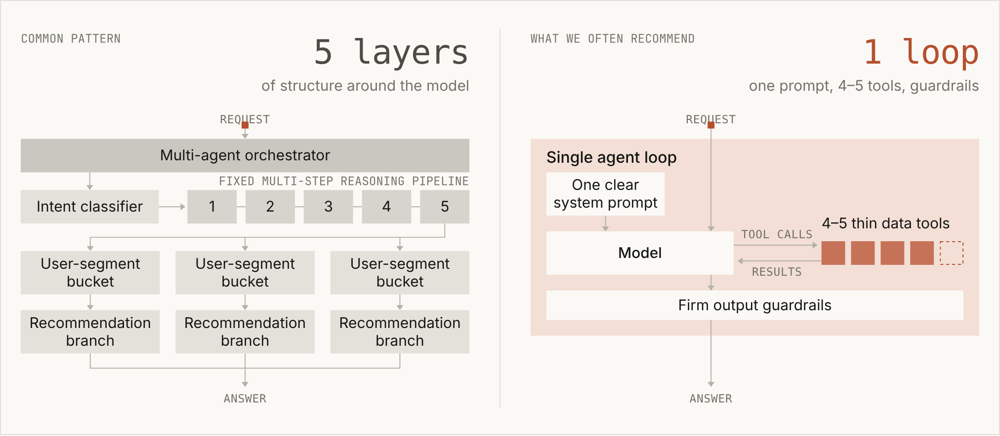
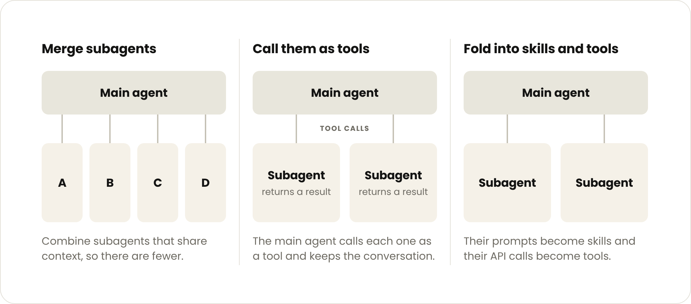

Anthropic · Applied AI · 2026-10-22
Building agents: When to fold subagents into your main agent loop构建智能体：何时该把子智能体折叠进主智能体循环
60 秒速览：这篇文章在说什么
译者所加，不是原文的一部分 —— 读完这 5 条，再看原文会快很多。
- 一句话结论：在企业里，把路由层（router）、规划器、领域子智能体折叠进一个主循环，常常在质量、成本、延迟三方面同时更好——因为子智能体最主要的价值「隔离上下文」，已经被技能（Skills）和工具检索（tool search）这类「渐进披露」手段接管了。
- 为什么会跑偏：各团队按自己的业务各建一个子智能体，智能体架构就变成了组织架构图的复印件（康威定律）。随之而来的是上下文在来回传递中丢失、几百个重叠的子智能体、每队往系统提示词里加一句的「缝合怪」、以及层层嵌套带来的延迟。
- 什么时候仍该用子智能体：只有三种情况——单循环因为上下文膨胀已经出现可测量的性能下降；需要并行、且用完即弃的崭新上下文；或者单个智能体已经挑不准工具、指令还互相冲突。
- 怎么迁：先建一套 10 条黄金样例的端到端评测 → 按「共享上下文」合并同类子智能体 → 把它们当工具调用（主智能体保留对话权）→ 最后逐个拆成「技能 + MCP 工具」，用评测对比「折叠版 vs 保留版」，只留下跑分更好的那个。
- 组织怎么配合：各团队的所有权从「一个智能体」转成「一些技能和工具」，中央一个小团队守着系统提示词与端到端质量；四个 /claude-api 技能分别负责建评测、清掉写给旧模型的提示、反复迭代提分、降低成本。
常见搭法：5 层结构
- 多智能体编排器
- 意图分类器
- 固定的多步推理流水线
- 按用户分群的三个桶
- 三条各自独立的推荐分支
本文建议：1 个循环
- 一份清晰的系统提示词
- 4-5 个「瘦」数据工具
- 严格约束输出的护栏
左边那套结构，很多是在替模型做它现在已经会做的事。
读法建议：只有 10 分钟，先读第一节（失败模式）和第二节（渐进披露为什么成立）；要动手改架构，直接跳到第三节和第五节。页面上所有虚线下划的词都可以悬停看解释，不必点走。
子智能体有它不可替代的位置，但企业里那种「每个团队一个子智能体」的搭法，常常是在替模型做它已经不需要人替它做的事。本文要回答两件事：什么时候该把路由器、规划器、领域子智能体折叠回主循环，以及怎么一步步折过去。
If you've built an agent in Claude Platform that includes multiple subagents, see which may make sense to fold into the main agent loop using our migration kit. It runs a guided workflow to identify your patterns, evaluate alternatives, and verify the best approach. It includes a demo that you can try on a mock system before running on your agent.
如果你在 Claude 平台上构建过一个包含多个子智能体的智能体，可以借助我们的迁移工具包，看看其中哪些子智能体适合折叠进主智能体循环1。它会跑一套引导式流程：先识别你现有的模式，再评估不同方案，最后验证哪条路最合适。工具包里还带一个演示，可以先在一套模拟系统上试，试完再放到你自己的智能体上跑。
Subagents – agents with their own context window, tools, and instructions, orchestrated by a coordinator – are a core component of agent design. They are effective at verification, parallel work, and modular permissioning. We use them in many of our own agents that we build using Claude Platform, for example our multi-agent research system.
子智能体是智能体设计的核心构件之一：它们有各自的上下文窗口、工具和指令，由一名协调者（coordinator）统一编排。它们在验证、并行工作、模块化授权这三件事上很有效。我们自己用 Claude 平台构建的许多智能体都在用它们，比如我们的多智能体研究系统。
However, recently the Applied AI team has found a pattern of enterprise agent deployments that have benefited from folding routers, planners, and domain subagents into the main agent loop.
不过，应用 AI 团队（Applied AI）最近在企业智能体部署中发现了一类常见情况：把路由层（router，先判断这个请求该交给谁）、规划器和领域子智能体折叠进主循环之后，受益了。
In our comparisons across several enterprise deployments, a single agent with skills frequently outperformed both the one-prompt-for-everything design and the subagent design on quality, and often at a lower cost and latency per task.
在我们对多个企业部署所做的对比中，一个带技能（skills）的单智能体在质量上经常同时胜过「一个提示词包打天下」的设计和子智能体设计，而且往往每个任务的成本和延迟还更低。
For example, one company found the dozen of specialist subagents within its customer-facing agent made a consistent on-brand experience difficult to maintain and added latency that hurt the user experience.
举个例子：一家公司发现，自家面向客户的智能体里那十几个专家子智能体，让「始终保持统一的品牌调性」变得很难维护，同时还额外增加了延迟，损害了用户体验。
We also often see proposed agent designs that follow a familiar progression: an intent classifier, a fixed multi-step reasoning pipeline, user-segment buckets, separate recommendation branches, and a multi-agent orchestrator on top.
我们还经常看到一类似曾相识的方案，一层层叠上去：一个意图分类器、一条固定的多步推理流水线、按用户分群的几个桶、几条各自独立的推荐分支，最后在最上面盖一个多智能体编排器。
In these cases feedback is often that most of this structure was doing work the model no longer needed done for it, and that one clear system prompt, 4-5 thin data tools, and firm output guardrails would cover most of the use case.
这类情况下，我们通常给出的反馈是：这套结构里的大部分，是在替模型做它已经不需要别人替它做的工作；而一份清晰的系统提示词、4-5 个「瘦」数据工具2，再加上严格约束输出的护栏，就能覆盖大多数使用场景。


常见设计 vs. 本文建议：5 层结构 vs 1 个循环 左栏 COMMON PATTERN（常见模式）：REQUEST 先到多智能体编排器，再经意图分类器、固定五步推理流水线、用户分群和推荐分支，共 5 层。右栏 WHAT WE OFTEN RECOMMEND（常建议）：1 个循环，一份清晰系统提示、4—5 个「瘦」数据工具、硬性输出护栏。
原文图注：subagent design
这张图怎么看（5 条）
- 先看两栏顶部的「5 layers」对「1 loop」：左边是包在模型外的 5 层结构，右边只剩 1 个循环。
- 左栏按箭头读：REQUEST 进 Multi-agent orchestrator，再经 Intent classifier 分到三个 User-segment bucket，最后落到 Recommendation branch，每支对应一类用户。
- 中段 FIXED MULTI-STEP REASONING PIPELINE 里排着 1—5 五个小格：推理步骤是写死的，正文说这段模型已不需要。
- 右栏 Single agent loop 里只有 Model：TOOL CALLS 调 4-5 thin data tools（四个实心方块加一个虚线框），RESULTS 把结果送回同一个 Model，一圈就完。
- 最底部 Firm output guardrails 横贯整个循环：结构变简单，硬性输出限制仍保留，呼应正文「「瘦」数据工具加护栏就够」。
一句话：同样的用例，模型外面堆 5 层结构，不如一个带 4—5 个「瘦」数据工具的循环。
To be clear, subagents still have their place, including at the research frontier. Use them when:
说清楚一点：子智能体仍有它的位置，在探索性研究的前沿尤其如此。下面这些情况就该用它们：
- A single agent loop hits measurable performance degradation from context bloat, or
- Multiple tasks need to be tackled in parallel with fresh context windows that can be discarded once the task is done, or
- A single agent struggles to select appropriate tools or there are conflicting instructions in the system prompt.
- 单个智能体循环因为上下文膨胀，出现了可以测量到的性能下降；或者
- 多个任务需要并行推进，而且每个任务都要用全新的上下文窗口，任务做完整个窗口就能丢掉；或者
- 单个智能体已经挑不准该用哪个工具，或者系统提示词里存在互相冲突的指令。
But too often we see enterprises give each team or problem type its own subagent, with the agent architecture becoming a copy of their org chart (Conway's law at work).
但我们见得太多了：企业给每个团队、每种问题类型都配一个自己的子智能体，结果智能体架构变成了组织架构图的复印件——这是康威定律3在起作用。
This post explains when to consider folding subagents into your main agent loop with best practices we've learned from building agents in large organizations.
这篇文章讲的就是：什么时候该考虑把子智能体折叠进主循环，以及我们在大组织里做智能体时总结出的最佳实践。
Agent building failure modes for large organizations大型组织构建智能体的典型失败模式
公司想让一个智能体统一多个产品，但每项能力归不同的团队，于是很自然地「各建一个，再盖一个编排器」。这看起来最省事，却会连锁引发五个问题，其中最后一个是延迟——有客户实测，多智能体的耗时约为单循环的两倍。
Companies often want to build an agent that unites multiple products and capabilities into a single customer interface.
公司常常想做一个智能体，把多个产品和能力统一到同一个客户界面里。
Typically, each capability is owned by a separate team, so companies start by letting each individual team build their own agent, then a central platform team builds an orchestrator on top. This can take on several structures including orchestrator-subagent or a single agent with specific agents exposed as MCP tools.
通常每项能力都归一个不同的团队管，于是公司的起点是：让各团队先各自建一个智能体，再由一个中央平台团队在最上面加一个编排器。这可以落成好几种结构，比如「编排器 + 子智能体」，或者一个主智能体、把若干特定智能体作为 MCP 工具暴露出来。
This looks like the simplest solution but introduces immediate complexity around:
这看起来是最省事的做法，但它会立刻在几个方面引入复杂度：
- Context management: You need to decide what context is exchanged between agents and often lose details in the back and forth.
- Subagent sprawl: Every team ships its own subagent, so companies end up with hundreds of overlapping subagents with no enforced standards and no specific owner.
- The Frankenprompt: Every team adds a sentence to the system prompt, resulting in conflicting rules and no consistent voice.
- Unvetted, overly localized evals: Everyone adds their own evals that are overly optimized for their subtask. No one owns or maintains the whole set, and leadership makes decisions based on watered-down, overly localized scores.
- Latency: Multi-agent architectural complexity adds latency. One customer that evaluated their multi-agent harness against a single agent loop saw a roughly 2x faster runtime with the latter.
- 上下文管理：你得决定智能体之间交换哪些上下文，而在来回传递中细节经常会丢。
- 子智能体泛滥：每个团队都交付自己的子智能体，于是公司最后攒下几百个功能重叠的子智能体，既没有强制执行的标准，也没有明确的归属人。
- 「缝合怪」提示词：每个团队都往系统提示词里加一句，最后规则互相冲突，语气也不统一。
- 未经统一把关、过度局部化的评测：人人都加自己的评测，而且都只为自己那块子任务过度优化。整套评测既没有负责人也没有维护者，领导层最后只能基于被稀释的、只反映局部情况的分数做决策。
- 延迟：多智能体架构的复杂度会带来额外延迟。有个客户拿自己的多智能体框架（harness）和单智能体循环做过对比，换成单循环跑同样的任务，大约只要一半时间。
Using an agent loop with progressive disclosure用「渐进披露」的智能体循环
「渐进披露」是本文的技术核心：智能体先只看到技能和工具的简短说明，需要时才把完整内容加载进来。它一次解决三件事——共享上下文让答案更好、按需加载让提示词不必臃肿、模型本身变强让更多决策可以搬进模型。这三条合起来，就是「一个循环就够」的底气。
The orchestrator-subagent design described above is a reasonable approach to coordinating specialists built across teams, but often a more effective approach can be progressively disclosing context via skills and progressively disclosing tools via tool search. In other words, the agent sees short descriptions of the skills and tools, which are fully loaded only when needed.
前面讲的「编排器 + 子智能体」设计，是在跨团队协调专家能力时一种合理的做法；但通常更有效的做法是：通过技能（skills）渐进披露上下文，以及通过工具检索（tool search）渐进披露工具。换句话说，智能体一开始只看到这些技能和工具的简短说明，真正需要时才把完整内容加载进来。
There are three reasons why this approach can make sense:
这个做法之所以成立，有三个原因：
- Shared context produces better answers: for longer-running agents, we want the context from several different tasks to sit in the main context window. An agent that has seen the result of each earlier step can connect them, which leads to richer outputs and better insights than a set of summaries handed back by subagents. It also means fewer context windows and fewer lossy handoffs.
- Progressive disclosure prevents context bloat: this techniqueallows teams to build single agents that can accomplish a wide variety of tasks without requiring all of the context to be immediately loaded into one long system prompt. This removes the main reason teams previously split work across subagents. In fact, we reduced Claude Code's system prompt for more advanced models by over 80% which included cuts related to progressively disclosing skills and tools.
- Models are more capable: starting with Opus 4.5, models became capable of managing far more in a single loop than most teams expected. You cannot turn off thinking on Opus 5.5, and Fable 5.1, and recent models increasingly narrate their progress and check their work as they go, which makes some harness elements redundant. Each new model lets you move more of the decision-making out of the harness and into the model itself. A simpler loop is also easier to move to the next model; in migrations we have helped customers with, rigid multi-agent structures were often what stopped the new model from doing more of the work.
- 共享上下文能产出更好的答案：对运行时间较长的智能体来说，我们希望来自好几个不同任务的上下文都留在主上下文窗口里。一个亲眼看过前面每一步结果的智能体，才能把这些结果串起来，产出比「由子智能体递回来的一堆摘要」更丰富的内容、更好的判断。这也意味着更少的上下文窗口、更少的有损交接。
- 渐进披露能防止上下文膨胀：团队因此可以构建单个智能体来完成五花八门的任务，而不必把所有上下文一股脑塞进一条很长的系统提示词里。这也消除了团队过去把工作拆给子智能体的主要理由。事实上，我们针对更强的模型把 Claude Code 的系统提示词减掉了 80% 以上，其中一部分削减正是与「渐进披露技能和工具」相关的。
- 模型本身更强了：从 Opus 4.5 开始，模型能在单个循环里处理的事情，远超大多数团队的预期。在 Opus 5.5 和 Fable 5.14 上已经无法关闭「思考」（thinking），而且新近的模型会越来越多地边做边汇报进度、边做边检查自己的工作，这让 harness 里的一些部件变得多余。每出一代新模型，你都能把更多决策从 harness 挪进模型自身。更简单的循环也更容易迁移到下一代模型；在我们帮客户做的迁移里，卡住新模型、让它做不了更多活的，往往就是那套僵化的多智能体结构。
The single agent loop design requires discipline: a carefully managed system prompt, skill and tool descriptions that trigger at the right times, and deliberate handling of context windows, memory, and note-taking. This article goes deeper into migration and design considerations in subsequent sections.
单智能体循环的设计是有纪律要求的：系统提示词要精心维护；技能和工具的说明要在正确的时机被触发；上下文窗口、记忆、记笔记都要有意识地处理。本文后面的小节会更深入地讲迁移和设计上的考量。
One central team should own end-to-end quality and the system prompt, vetting every new tool and eval before it ships. Keeping that central team small helps iteration move quickly and lowers coordination cost across a large org.
应当有一个中央团队对端到端质量和系统提示词负责，任何新工具、新评测在交付前都要经过它把关。把这个中央团队保持在小规模，能让迭代跑得更快，也能降低大组织内部的协调成本。
If you go the multi-agent route, start with the simplest pattern (generator-verifier, orchestrator-subagent, or other) that could work. Decompose boundaries effectively by dividing by context: give each subagent a piece of work that needs little from the rest of the system and have it hand back a compact result (good candidates are independent research paths, separate components with clean interfaces, or black-box verification). When agents are split by problem type, they engage in a “telephone game,” passing information back and forth with each handoff degrading fidelity.
如果你还是走多智能体路线，就从「可能奏效的最简单模式」开始——生成器—验证器、编排器—子智能体，或者其他哪种都行。切分边界要切得有效，办法是按上下文来分：给每个子智能体一块「几乎不需要系统其余部分」的工作，让它只递回一个紧凑的结果（合适的候选是各自独立的研究路径、接口干净的独立组件，或者黑箱验证）。如果按「问题类型」去拆智能体，它们就会陷入一场传话游戏5：信息来回传递，每交接一次，保真度就掉一档。

按问题类型拆 vs. 按上下文拆：传话游戏 vs 一个人带着上下文做完 上半 SPLIT BY PROBLEM TYPE（按问题类型拆）：Agent 1 写功能，HANDOFF 交给 Agent 2 写测试，再 HANDOFF 交给 Agent 3 审代码，每交接一次就丢一层上下文。下半 SPLIT BY CONTEXT（按上下文拆）：One agent 自己写完功能和测试，只有 Verifier 单独跑测试，因为它不需要实现上下文。
原文图注：subagents split by problem
这张图怎么看（5 条）
- 先看上半的 SPLIT BY PROBLEM TYPE（按问题类型拆）：Agent 1 写功能，HANDOFF 给 Agent 2 写测试，再 HANDOFF 给 Agent 3 审代码，各管一段。
- 数一数 HANDOFF 出现两次：图注说每次交接都丢上下文，写测试的 Agent 不知道实现为什么这么写。
- 再看下半 SPLIT BY CONTEXT（按上下文拆）：One agent 一个框就写完功能和测试，下面注着 because it already has the context，因为它本来就有上下文。
- 右侧单独的 Verifier 只跑测试、报结果；图注点明它不需要实现上下文，所以才适合被拆出去。
- 上下对比的重点不是「拆得越少越好」，而是按上下文边界拆：共享同一份上下文的活别分给两个智能体。
一句话：按问题类型拆会让信息在 HANDOFF 里越传越少；要按上下文边界拆。
How to fold subagents into the main agent loop怎样把子智能体折叠进主循环
说明：原文交替使用 main agent loop 与 single agent loop，指的都是同一个东西，中文统一叫「主循环」或「单循环」，别当成两种架构。单循环长这样：一个模型、一个上下文窗口、一个开放式的工具循环（步骤不写死）；预算和审批闸门设在 harness 里，计划由模型自己写、自己改。落地路径是三步——先建评测，再合并同类，再逐个折叠，每次只动一处，用评测看哪个任务翻转了。
Many teams already have an orchestrator and a set of specialist agents in production. The following is the single loop design we'd suggest working toward:
很多团队的生产环境里已经有了一套编排器加一组专家智能体。下面是建议你逐步靠拢的单循环设计：
- One model and one context window running an open-ended tool loop, with limits (turn and cost budgets, write gates) set in the harness.
- Each turn, the model emits a batch of tool calls. The harness runs them in parallel and returns raw results to the same model, which decides the next step: another batch, a question to the user, or an answer.
- The loop stops when the model answers or hits a budget. A goal or verifier check can optionally run after the answer.
- The model writes its plan in context on the first turn and revises it as results arrive. This is the main change from the orchestrator and specialist agents setup: the model that writes the plan is also the one carrying it out, so it can change the plan mid-turn.
- Context still gets loaded, and is managed by the agent itself:
- 一个模型、一个上下文窗口，跑一个开放式的工具循环（步骤不写死，跑几步由模型自己决定）；轮次预算、成本预算、写入闸门这些限制，都设在 harness 里。
- 每一轮，模型发出一批工具调用。harness 并行执行它们，把原始结果交回给同一个模型，由它决定下一步：再来一批调用、向用户提问，还是给出答案。
- 模型给出答案、或者用尽预算时，循环就停。答案之后还可以（可选地）再跑一次目标检查或验证器检查。
- 模型在第一轮就把计划写在上下文里，之后随着结果返回不断修订。这是相对「编排器 + 专家智能体」结构最主要的变化：写计划的模型就是执行计划的模型，所以它能在执行途中改计划。
- 上下文仍然要加载，只是改由智能体自己来管：
- A code step that rewrites the plan from a catalog of rules is no longer needed, since the model decides each step.
- Ordering and domain procedure move into skills.
- Hard limits (validation, approval gates) and anything else that comes up mid-conversation (e.g. memory lookup) move into the tools.
- Code can still be used to load anything cheap and almost always relevant (e.g. an entity resolution step), and to handle any mechanical parts (payload construction, stream parsing, resuming a clarification) inside tools the loop calls.
- 不再需要「用代码照一张规则目录重写计划」这一步，因为每一步都由模型自己决定。
- 顺序和领域流程搬进技能（skills）。
- 硬性约束（校验、审批闸门），以及对话中途中冒出来的其他需求（比如查记忆），搬进工具。
- 代码仍然有用：凡是「加载成本很低、而且几乎总是相关」的东西（比如「实体消歧」这一步：把「张三」「张先生」「老张」认成同一个人），可以用代码加载；循环所调用的工具内部，那些机械性的活儿（拼装请求体、解析流、恢复一次澄清对话）也可以交给代码。
This single loop design also helps with the end state many teams are working toward (an agent that understands a user's high-level goals and acts on their behalf), since it keeps everything the agent has learned in one context.
这个单循环设计也有助于抵达很多团队正在追求的终局——一个能理解用户高层目标、并代表用户行动的智能体——因为它把智能体学到的一切都留在了同一个上下文里。
The suggestions below are how a team could get from a multi-agent system to a single agent loop in stages, and how several teams can keep contributing to that agent along the way.
下面的建议讲的是：一个团队怎样分阶段从多智能体系统走到单循环，以及在这个过程中，多个团队怎么继续给同一个智能体做贡献。
Task-completion evals任务完成度评测
The first step is to create an eval set that can help you determine whether you should fold a subagent into the main agent loop. The eval structure we've seen work is one shared end-to-end set owned by a central team with smaller eval sets shipped with each skill by the team that owns it. Even a set of 10 golden examples is enough to start.
第一步是建一套评测集，用来判断某个子智能体到底该不该折叠进主循环。我们见过行之有效的评测结构是：一套由中央团队负责的共享端到端评测集，加上每个技能各自附带的小评测集——由拥有该技能的团队交付。哪怕只有 10 条黄金样例（golden examples），也足够起步。
Grading the agent's final message against a rubric is a good starting point for tracking answer quality. While you still have an orchestrator, you should also track routing accuracy (did it pick the right subagent?). Once a subagent is folded in, check instead whether the agent loaded the right skill or called the right tool. Working toward task-completion evals over time is helpful as this matters most when comparing architectures.
用一个评分量表（rubric）给智能体最后的回复打分，是跟踪答案质量的好起点。只要你还留着编排器，就该同时跟踪路由准确率——它有没有挑对子智能体？某个子智能体折叠进来之后，就改为检查：智能体有没有加载正确的技能、或者调用正确的工具。逐步转向「任务完成度」评测是有价值的，因为在比较不同架构时，这个指标最要紧。
This can be complex in environments where internal systems are difficult to replay and user engagement is difficult to simulate. One approach that has worked for us internally is to record timestamps on important events, so they can be replayed later to run as targeted evals.
在内部系统难以重放、用户互动难以模拟的环境里，这件事会很复杂。我们内部有效的一个做法是：给重要事件记上时间戳，之后就能按这些时间点重放，当作有针对性的评测来跑。
Reducing subagents over time逐步减少子智能体
Evolving toward a single agent loop involves folding the subagents into tools and skills. This can be done by merging domain subagents, calling them as tools, or replacing them with skills and tools.
向单循环演进，就是把子智能体折叠成工具和技能。具体有三条路：合并领域子智能体、把它们当工具来调用、或者用技能和工具把它们替掉。

把子智能体折进主循环的三种做法 三个并列做法：Merge subagents（合并子智能体）把共享上下文的 A、B 合成一个、C、D 合成一个；Call them as tools（当工具调用）让 Main agent 用 TOOL CALLS 调 Subagent，只收一个结果；Fold into skills and tools（折进技能与工具）把提示词变成技能、API 调用变成工具。
原文图注：folding in subagents
这张图怎么看（5 条）
- 从左到右三个标题就是三条路线：Merge subagents、Call them as tools、Fold into skills and tools，对应正文「减少子智能体」一节。
- 左栏原来有 A、B、C、D 四个竖框，合并后只剩 A + B 和 C + D，底注说共享上下文的合成一个、数量因此变少。
- 中栏 Main agent 下方的 TOOL CALLS 连到两个 Subagent，每个都写着 returns a result：主循环边聊边调，只收结果。
- 右栏底注最关键：Their prompts become skills and their API calls become tools，即提示词变技能、接口调用变工具，正是折进主循环那一步。
- 三条路线不是互斥的：正文说可以合并子智能体、当工具调用，或替换成技能与工具，逐步把子智能体折进主循环。
一句话：把子智能体折进主循环有三条路：合并共享上下文的、当工具调用、替换成技能与工具。
Combining domain agents合并领域智能体
Build a small end-to-end eval before the first merge. Then fold in by shared context starting with subagents that have the most use.
第一次合并之前，先建一套小的端到端评测。然后按共享上下文来折叠，从使用量最大的子智能体开始。
Merge specialists that chain on each other's output, touch the same data, or are often called together. For example, if a significant share of production traffic is one specialist followed by a second, that is a tightly coupled pair, which makes it a candidate to merge into one domain agent.
把这样的专家子智能体合并起来：它们一个接一个地串着用对方的输出、读写同一批数据，或者经常被一起调用。比如，如果生产流量里有相当一部分是「先一个专家、紧接着另一个专家」，那这就是一对紧耦合的组合，适合合并成一个领域智能体。
Subagents called as tools把子智能体当工具调用
When one of the three conditions above applies and you keep a subagent, it can be effective to have the main agent call subagents as tools so it can continue holding the conversation with the user.
如果上面那三个条件之一成立、你决定保留某个子智能体，那么让主智能体把子智能体当工具来调用会很有效——这样主智能体可以继续握着和用户的对话。
We'd only recommend a full handoff, where the subagent takes over the conversation, when it needs to talk to the user directly. Everything else can be a skill plus tools in the main loop.
我们只建议在子智能体需要直接和用户对话时，才做完全交接——由子智能体接管对话。其余所有情况，都可以是主循环里的「一个技能 + 几个工具」。
This will allow you to define a shared response schema for subagents, verify the conclusion against real data with the main agent, and trim the input to any final synthesis step. This is a good first step, as you don't need to rewrite the subagents. It also gives you a baseline on the task-completion eval before deciding to fold any subagents into the main agent.
这样做让你可以：为子智能体定义统一的返回结构；由主智能体拿真实数据去核对结论；并收窄送进最后综合步骤的输入。这是个不错的起步动作，因为你不需要重写子智能体。它还会给你一个任务完成度评测上的基线，供你之后决定要不要把子智能体折叠进主智能体。
However, some failure modes will remain:
不过，有些失败模式仍然会存在：
- Each specialist has its own prompt, context, owner team, and evals
- Each call still hands back a lossy summary
- Every call is a nested model loop that adds latency
- 每个专家仍然有自己的提示词、上下文、归属团队和评测；
- 每次调用仍然只递回一份有损的摘要；
- 每次调用都是一个嵌套的模型循环，都会增加延迟。
Folding subagents into the main agent via skills and tools用技能与工具把子智能体折叠进主智能体
Fold subagents into the main agent one at a time by turning each one's prompts into skills and API calls into MCP tools. Compare eval performance with and without the subagent. Then decide which to keep.
一次只折叠一个子智能体：把它的提示词变成技能，把它的 API 调用变成 MCP 工具。然后比较「有它」和「没它」两种情况下的评测表现。再决定留哪个。
When you compare, don't just examine the final score, take a look at which tasks flipped. When we tested this on a sample support agent, folding one subagent into another lowered latency, but also broke a process that had been passing. The main agent was holding the order lookup tool and answering on its own, without asking the shipping specialist for the delivery date.
对比的时候别只看总分，要看有哪些任务的通过状态翻转了。我们在一个示例客服智能体上测这个时，把一个子智能体折叠进另一个，延迟确实降了，但也弄坏了一条原本能通过的流程。原因是：主智能体自己手里就有订单查询工具，于是直接给了答案，没去问物流专家要送达日期。
Before each change, make sure your eval has a task for every chain of agents that runs together in production and for every rule the agent must not break, and run each task more than once, since a break like this one only showed up in one run out of two.
每次改动之前，要确认你的评测里：生产环境中会串起来跑的每一条智能体链路都有对应任务，每一条「绝对不能破」的规则也都有对应任务；而且每个任务都要跑不止一次——像上面那种崩法，两次里只出现了一次。
How several teams can contribute to a single agent多个团队怎样一起为同一个智能体做贡献
分权方式换了：团队不再「拥有一个智能体」，而是「拥有一些技能和工具」；系统提示词和端到端质量由一个小型中央团队守。三种载体各管一类东西——要动手做的走 MCP 工具，要懂「我们这行怎么干活」的走技能，偶尔才查一次的参考资料走知识库。
Domain reasoning can be retrieved from knowledge bases, skills, and MCP tools. Individual teams can shift their ownership from agents to skills and tools, with one small central team keeping ownership of the system prompt and end-to-end quality. This involves vetting new skills, tools, and evals before they ship.
领域内的判断与知识，可以从知识库、技能和 MCP 工具里取。各个团队可以把所有权从「智能体」转移到「技能和工具」上；系统提示词和端到端质量，由一个小型中央团队继续拥有。这也意味着：新的技能、工具和评测，在交付前都要过一遍审核。
MCP toolsMCP 工具
Tools are the right fit when the agent needs to take an action, read live data from a system, or return a result in a fixed shape. You can also use tools as a way to keep calling subagents while you migrate. We recommend tools grouped by user intent (not one tool per API) because once you exceed 30-50 tool definitions in the system prompt, tool choice tends to degrade.
当智能体需要「做一件事」、需要从某个系统里读实时数据、或者需要拿到固定格式的结果时，工具就是对的形态。迁移期间，你也可以把工具当作「继续调用子智能体」的手段。我们建议按用户意图给工具分组，而不是一个 API 配一个工具——因为系统提示词里的工具定义一旦超过 30-50 个，模型选工具的表现就开始下降。
Use tool search with deferred loading, limit hard preconditions, and move any needed ones into the tools. For example, if Y needs X's output, Y's tool checks for it and returns an instruction the model can act on. Per-user permissions work the same way. Each tool checks what the calling user may see or do and returns a plain refusal the model can read, so one loop can serve users with different access without a separate agent per permission level.
用工具检索配合延迟加载，尽量少设硬性前置条件；确实需要的，就把它挪进工具内部。举个例子：如果 Y 需要 X 的输出，就让 Y 的工具自己去检查，然后返回一条模型能照着做的指示。按用户区分的权限也是同样的思路。每个工具自己检查调用者能看什么、能做什么；拒绝时返回一句模型读得懂的、平实的拒绝语。这样一个循环就能服务权限不同的用户，不必为每个权限等级单独配一个智能体。
Skills技能
Skills are the right fit when the agent needs to know how a team does work, like the steps, rules, and judgment calls a specialist subagent's prompt used to hold.
当智能体需要知道「某个团队是怎么干活的」——也就是原本塞在专家子智能体提示词里的那些步骤、规则和判断取舍——技能就是对的形态。
Our approach to growing skill libraries is to give the maintenance work back to the people writing the skills. Claude can do the heavy lifting with skills that can build, test, and prune other skills.
我们扩充技能库的思路，是把维护工作交回给写技能的人。Claude 可以挑大梁：它可以用一些技能去构建、测试、修剪别的技能。
To prevent skill sprawl, you can have DRIs per team own their skills and make sure they are well crafted, distinct, and shipped with appropriate evals.
为了防止技能泛滥，可以让每个团队各有一名直接责任人（DRI）拥有自己的技能，并确保这些技能做得精、彼此不重复、交付时附带相称的评测。
- /skill-creator allows you to author new skills that start well-formed, and audit existing ones to trim, deduplicate, and restructure them.
- /skill-doctor allows you to see what each skill in your library costs and how often it's actually used, and delete dead weight.
- /skill-creator：让你新写的技能从一开始就结构规整；也能把现有技能审一遍，做精简、去重和重构。
- /skill-doctor：让你看到技能库里的每个技能花了多少成本、实际被用的频率有多高，然后把没用的死重删掉。
Knowledge bases知识库
Knowledge bases are the right fit for reference material the agent only needs some of the time. Facts and reference material (policies, metric definitions, product specs) can sit behind a search or lookup tool the model calls, or ship as reference files inside a skill. Avoid having code retrieve and paste this context into prompts.
对于那些智能体只是有时候才需要（不是每一轮都要）的参考资料，知识库就是对的地方。事实和参考资料（政策、指标口径、产品规格）可以放在检索或查询工具后面，让模型自己去调；也可以作为参考文件，打包在一个技能里。不要用代码把这类上下文捞出来、再贴进提示词里。
Tools to accelerate this work加速这件事的工具
四个 /claude-api 技能把上面的活儿拆开：建评测、查旧提示、迭代提分、降本。但文章的落点不是工具，而是原则——模型会继续变，任何一套具体架构都会过时，只有「测量、一次只改一处、留下有效的」不会过时。
We recently released a set of Claude API skills that can help with most of the work mentioned above. Our migration kit chains these skills together in one guided workflow for assessing and moving multi-agent systems to a single agent loop. It includes a demo you can try before running it on the real thing:
- /claude-api build-eval: can help create a first end-to-end set owned by the central team or small evals each team ships with its skill
- /claude-api prompt-audit: can flag instructions written for older models in your prompts, skills, and tool descriptions and propose fixes as a diff. This can be run on your system prompts to find any rules that were added for an earlier model and are now making the agent slower or more rigid. Each team's DRI can also run it on their own skills and tool descriptions.
- /claude-api hillclimb: can iteratively improve an app against an existing eval. This can be used for the "folded in vs kept" comparison (after folding one subagent into a skill plus tools, let it iterate on the skill and tool descriptions and see if the folded version matches or beats the subagent), as well as your system prompt.
- /claude-api cost-optimize: profiles where your calls go and proposes savings from options such as prompt caching, trimming unneeded input and output tokens, effort, and model choice, one change at a time. This can help bring cost and latency down on a given design.
- /claude-api build-eval：帮你建出第一套端到端评测（由中央团队负责），或者帮各团队建出随技能一起交付的小评测。
- /claude-api prompt-audit：能标出你的提示词、技能和工具描述里那些「写给旧模型」的指令，并以 diff 的形式提出修改建议。它可以跑在你的系统提示词上，找出当年为旧模型加上的、如今只会让智能体更慢更僵的规则。每个团队的 DRI 也可以拿它跑自己的技能和工具描述。
- /claude-api hillclimb：可以针对一套现成的评测，反复改进一个应用。它可以用在「折叠版 vs 保留版」的对比上：把一个子智能体折成「技能 + 工具」之后，让它反复打磨技能和工具的说明，看折叠版能否追平、甚至超过原来的子智能体。它也可以用在系统提示词上。
- /claude-api cost-optimize：分析你的调用都花在了哪里，并从提示缓存、裁掉不需要的输入输出 token、思考强度、模型选择这些选项里提出省钱方案，一次只改一处。在给定设计下，它能帮着把成本和延迟压下来。
As models evolve, our understanding of how to best use them and guidance around best practice evolve as well. That makes any one architecture less important than the principle behind it: measure, change one thing at a time, and keep what holds up.
模型在演进，我们对「怎么用才最好」的理解、对最佳实践的指导，也在演进。所以任何一套具体架构，都没有它背后的原则重要：去测量，一次只改一处，留下经得起检验的那些。
This is one of those cases. As models get more capable and agents get longer running, more of your subagents can be skills and tools. You don't have to make that move in one step, though. Build a small end-to-end eval, fold in one subagent, and keep it as a subagent only if the folded version scores worse, then rinse and repeat.
本文说的情况，正是其中一例。模型越强、智能体跑得越久，你就能把越多的子智能体变成技能和工具。不过你不必一步到位：先建一套小的端到端评测，折叠一个子智能体；只有当折叠版得分更差时，才把它留作子智能体；然后重复这一套。
补充材料
下面几块都是译者所加，用来补上原文没展开的部分。正文里的虚线链接、虚线术语、上标数字，都能悬停看卡片；这里给出完整的清单，方便你事后再回头查。
延伸阅读地图
原文的引用合并后指向 12 个不同目的地。按「不读会不会误解本文」分成三档：必读 / 背景 / 可选，建议顺序即卡片上标注的数字。每条都写了「不点开也能拿到的重点」，所以你可以完全不跳转地读完这篇文章。
多智能体协调模式：五种做法与适用场景
claude.com · Multi-agent coordination patterns: Five approaches and when to use them
正文对应：由一名协调者（coordinator）统一编排
这是什么：Anthropic 的方法文章，讲多智能体系统里五种协调模式各自怎么运转、适合什么任务、容易卡在哪里。
为什么值得点：本文用「由协调者编排」一句定义 subagent。这篇把该定义的来龙去脉讲全：五种模式的名字和分工，也点出 orchestrator 会成为信息瓶颈——这正是本文主张合并的伏笔。
访问说明：可直接打开。
不点开也能拿到的重点
文章把多智能体协调分成五种模式。Generator-verifier 是生成者出稿、验证者按标准检查，不通过就打回重写。Orchestrator-subagent 是一个主智能体规划、分派、汇总，Claude Code 本身就用它。Agent teams 是协调者拉起多个长期存活的工人，各自从共享队列领任务，重复利用积累下来的上下文。Message bus 是智能体通过发布和订阅事件通信，由路由器分发。Shared state 是没有中心协调者，所有智能体直接读写同一个共享存储。作者建议从能用的最简单模式起步，看它卡在哪再换。每种模式都写了失败方式：验证标准不清会变成橡皮图章，编排者会成为信息瓶颈，agent teams 要求子任务真正独立，消息总线难追踪，共享状态容易出现重复劳动和相互触发的死循环。
- 五种模式：Generator-verifier、Orchestrator-subagent、Agent teams、Message bus、Shared state
- 选型看三个问题：子任务是否需要长期保留上下文、流程是否可预先写出、智能体是否需要看到彼此的发现
- 推荐起点是 orchestrator-subagent，它覆盖的问题最广、协调开销最低
- 拆分原则是「按上下文」而不是「按工作类型」；手递手越多，细节丢得越多
- 生产系统常混用模式，例如整体用 orchestrator-subagent、某个协作密集的子任务用 shared state
什么时候该用多智能体系统（以及什么时候不该）
claude.com · When to use multi-agent systems (and when not to)
正文对应：更少的上下文窗口、更少的有损交接
这是什么：Anthropic 讲多智能体取舍的文章：列出多智能体真正划算的三种情况，以及按「上下文」而不是「工作类型」拆分的原则。
为什么值得点：本文第 2 条理由——共享上下文产生更好答案、更少交接损失——直接引自这篇。它也给了反例：按角色拆分的智能体把 token 花在协调上，比干活还多。
访问说明：可直接打开。L9 与本条指向同一页面，读的是不同段落。
不点开也能拿到的重点
文章先给了三种多智能体真正胜过单智能体的情况：上下文被污染导致质量下降、任务可以并行、专门化能改善工具选择或专注度。除此之外，协调成本通常超过收益。代价是实打实的：多智能体实现通常比单智能体多用 3 到 10 倍 token，因为要复制上下文、来回协调、为交接做摘要。更重要的设计原则是按上下文拆分而不是按问题类型拆分。按工作类型拆（一个写功能、一个写测试、一个评审）会让每次交接都丢上下文，像玩传话游戏；合适的边界是独立的研究路径、接口清晰的独立组件、黑盒验证。
- 三种适用情况：上下文污染、可并行、需要专门化
- 代价：多智能体通常比单智能体多用 3 到 10 倍 token；并行换来的是覆盖度，不一定是更快
- 按上下文拆分，不要按工作类型拆分；按角色拆分常出现 token 花在协调上
- 验证型子智能体是少数稳定有效的模式，但要防止它「提前宣布成功」
- 工具过多（常 20 个以上）时，先考虑 tool search，而不是拆成多智能体
用 Skills 构建智能体：为专门工作配备能力
claude.com · Building agents with Skills: Equipping agents for specialized work
正文对应：一个带技能（skills）的单智能体
这是什么：Anthropic 解释 Agent Skills 的文章：skills 是什么、怎么用渐进披露省上下文，以及他们为什么从「造专门智能体」转向「给通用智能体配 skills」。
为什么值得点：本文的核心替代方案「一个智能体加 skills」就出自这条线。读它能看清分工：skills 装一个团队做事的步骤、规则和判断，subagent 装独立上下文与并行。
访问说明：可直接打开。
不点开也能拿到的重点
文章先说结论上的转向：过去以为不同领域要各自造智能体，现在更倾向一个通用智能体（像 Claude Code 那样通过代码做事）加一套 skills。skills 是组织好的文件集合，里面有 SKILL.md、说明文档、脚本，把领域流程、最佳实践和判断标准打包给智能体。关键机制是渐进披露：平时只把 name 和 description 这类元数据给模型，约 50 token；需要时才读完整 SKILL.md，约 500 token；再需要才读 references 里的文件，2000 token 以上。因此一个智能体可以挂几百个 skills 而不撑爆上下文。文章给出四层结构：agent loop 负责推理，runtime 负责执行，MCP servers 负责连接外部，skills library 负责指导。
- 为什么转向 skills：通用能力不等于专门经验，skills 把团队的做法、规则、脚本打包给智能体
- 渐进披露三层：元数据约 50 token，完整 SKILL.md 约 500 token，参考文件 2000 token 以上
- skills 可以把脚本当工具用：代码不必常驻上下文，还能被模型修改和扩展
- 四层架构：agent loop（推理）、runtime（执行）、MCP servers（连接）、skills library（指导）
- 生态有三类 skills：foundational、partner、enterprise；Agent Skills 已作为开放标准发布
有效电商智能体的结构指南
claude.com · A guide to the anatomy of effective commerce agents
正文对应：我们对多个企业部署所做的对比
这是什么：Anthropic 给电商类智能体写的工程指南，分三部分：架构、延迟与成本、生产运行。架构部分的结论是一个主循环加 skills 加工具。
为什么值得点：本文「带 skills 的单智能体常常胜过多智能体」这个判断的出处就在这篇。它给了对比结论，也解释了原因：电商对话前后高度耦合，子智能体交接会丢状态、加延迟。
访问说明：可直接打开。原链接带 #:~:text= 片段参数，用于跳到「In our comparisons across several enterprise deployments…」那一句，正文内容不受影响。
不点开也能拿到的重点
指南的主张很直接：一个模型跑在标准智能体循环里，用 skills 装长尾流程、用工具调你已有的系统；前面不要意图路由器，后面不要一堆领域子智能体。理由写在「Skills, not subagents」一节：电商对话是一个跨意图、跨轮次紧耦合的会话，需要大量共享上下文，而每次交接给子智能体都是一次有损的状态转移，还会多花数倍 token、多几秒延迟。作者说，在他们跨多个企业部署的对比里，带 skills 的单智能体在质量上稳定胜过「一个大提示词打天下」和「子智能体」两种设计，而且常常每次任务的成本和延迟更低。子智能体仍有位置：任务窄、自成一体时把它当工具调用（例如深度研究），或某个领域已有独立智能体需要直接面对用户时才做完整交接。
- 推荐架构：一个模型加一个标准智能体循环，skills 装长尾，工具调已有系统，无意图路由、无领域子智能体
- 对比结论：带 skills 的单智能体在质量上稳定胜出，且常常成本与延迟更低
- 子智能体的两个合理场景：被当作工具调用；领域已有独立智能体并需要直接面对用户
- system prompt 还是 skill：按出现频率决定，约占三成以上流量的内容放进 system prompt，其余进 skills
- 生产部分覆盖记忆、把安全限制放进 harness、以及如何给非确定性系统做 eval
我们如何搭出多智能体研究系统
anthropic.com · How we built our multi-agent research system
正文对应：我们的多智能体研究系统
这是什么：Anthropic 工程博客，复盘 Claude 的 Research 功能：一个主研究员带多个并行子智能体检索，最后交给引用智能体标注来源。
为什么值得点：本文把它当作「subagent 仍有价值」的例子。读它能看到多智能体真正擅长的是开放式、可并行的检索任务，也能看到代价：token 消耗和协调复杂度。
访问说明：链接有效：原来的 /engineering/ 地址 302 到 anthropic.com/research/multi-agent-research-system，内容可正常打开。
不点开也能拿到的重点
系统的骨架是 orchestrator-worker：主研究员先想策略，把计划写进 Memory 以防上下文被截断，再派多个子智能体并行搜索不同侧面。子智能体各自检索、边查边评估结果，然后把结论交回主研究员，由它决定是否继续派工。检索结束后 CitationAgent 负责定位引用位置。文章给出的关键数字：以 Opus 4 为主、Sonnet 4 为子的多智能体系统，在内部研究评测上比单智能体 Opus 4 高 90.2%；多智能体系统约用聊天 15 倍的 token。作者也强调这类架构适合重并行、信息量超过单个上下文窗口、要接很多复杂工具的任务，不适合所有智能体都得共享同一份上下文的领域。
- orchestrator-worker：主研究员做计划、派子智能体并行搜索、再汇总
- 内部评测：多智能体（Opus 4 主加 Sonnet 4 子）比单智能体 Opus 4 高 90.2%
- token 账：智能体约为聊天的 4 倍，多智能体约为聊天的 15 倍
- 提示词经验：把子任务描述清楚、按查询复杂度分配投入、先宽后窄、工具调用并行化
- 评测建议：先拿约 20 条小样本跑、用 LLM 当裁判按 rubric 打分、保留人工测试补盲区
单智能体循环迁移工具包（官方仓库）
github.com · anthropics/single-agent-loop-kit
正文对应：迁移工具包（开头提示框处） 迁移工具包（「加速这件事的工具」一节）
这是什么：GitHub 上的官方起步仓库：把「路由或调度器加一群专家子智能体」的系统，改成一个循环、按需加载 skill 和工具的智能体。
为什么值得点：本文开头提示框和文末「加速这件事的工具」两处都指向它。它把「怎么迁移」落成可执行步骤：先量化现状，再合并总是一起跑的 subagent，最后逐个折进主循环并用同一套 eval 比较前后。
访问说明：可直接打开。README 注明这是参考实现，不维护、不接受贡献。
不点开也能拿到的重点
仓库自带一个能跑的小例子：客服台，一个路由加六个 subagent。跟着 RUNBOOK 走，能在十分钟内看它审计这套系统、折进一个 subagent、打印改动前后的数字。它不预设单循环一定更好，每次改动都用同一套 eval 打分，只有数字证明替代方案不差，才删掉 subagent。基本流程三步：Measure（找到并补齐 eval，给现状打分）、Combine（合并总是一起跑的 subagent）、Fold（逐个把 subagent 拆成 skill 和工具，再比较）。落地用法是把仓库里的 skill 拷进自己仓库的 .claude/skills/，在 Claude Code 里说「Run the single-agent-loop skill」。
- 三步法：Measure（量化现状）→ Combine（合并常同跑的 subagent）→ Fold（逐个折成 skill 加工具并比较）
- 固定停下的节点：审计后、付费运行前、基线后、每次改动后；付费前会给 token 估算
- 没有 eval 也能开始：它陪你起草约十个任务，并让你确认每个任务「做对了」指什么
- 复用 Claude Code 命令：/claude-api 的 build-eval、hillclimb、prompt-audit、cost-optimize，以及 /skill-creator、/skill-doctor
- README 说明：两份真实运行记录都只是一个人在一个模型上跑的；merge 与 upkeep 两步还没在真实模型上跑过
面向 Claude 5 代模型的上下文工程新规则
claude.dev · The new rules of context engineering for Claude 5 generation models
正文对应：针对更强的模型把 Claude Code 的系统提示词减掉了 80% 以上
这是什么：Anthropic 工程博客，讲他们如何把 Claude Code 的系统提示词删掉 80% 以上、编码评测却没有可测损失，并列出六组「旧规则到新规则」。
为什么值得点：本文用它证明渐进披露有效：提示词能大幅削减，部分原因就是把 skills 和工具改成按需加载。读它能理解「给判断、别给死规则」的思路。
访问说明：可直接打开。
不点开也能拿到的重点
文章的核心事实：他们为 Opus 5、Fable 5 这类新模型删掉了 Claude Code 系统提示词的 80% 以上，编码评测没有可测的损失。原因是模型判断力变强，很多过去为防最坏情况写下的硬规则反而互相冲突，例如系统提示说「适当保留注释」、某个 skill 说「不要加注释」、用户说「照旧的来」。文章列了六条被推翻的旧规则：给规则改为给判断；给例子改为设计接口；一次全塞进去改为渐进披露；重复强调改为简洁的工具描述；把记忆写进 CLAUDE.md 改为自动记忆；简单规格改为更丰富的参考，例如 HTML 产物、测试套件、代码、rubric。
- 删掉 Claude Code 系统提示词 80% 以上，编码评测没有可测损失
- 六组旧到新：规则到判断、例子到接口设计、全量前置到渐进披露、重复到简洁工具描述、CLAUDE.md 记忆到自动记忆、简单规格到丰富参考
- 工具描述可以极简：用参数类型和枚举表达用法，例如 Todo 工具只留三个状态
- 验证与代码评审被移进按需调用的 skills；部分工具改为延迟加载，用 ToolSearch 现查现用
- 建议用 /doctor 检查 skills 与 CLAUDE.md 是否过度约束
什么时候该用多智能体系统（以及什么时候不该）
claude.com · When to use multi-agent systems (and when not to)
正文对应：把这样的专家子智能体合并起来
这是什么：与 L6 同一页的 Anthropic 文章：讲多智能体的适用条件与代价，以及按上下文拆分工作的原则。
为什么值得点：这里引它是为了「合并」这一步：把互相串联、共用数据、经常一起被调用的专家子智能体合成一个领域智能体。读的时候重点看「按上下文拆分」那一节。
访问说明：可直接打开；与 L6 同址，锚文本不同、在文中的用途也不同。
不点开也能拿到的重点
同一个链接，读的时候只需看与「合并」相关的部分。文章主张按上下文边界而不是工作类型拆分：互相前后串联、读同一份数据、经常一起出现的子智能体，实际上是紧耦合，应该合进同一个智能体。它还给了反例：在一次按软件开发角色（规划、实现、测试、评审）拆分的实验里，子智能体花在协调上的 token 比花在实际工作上还多。
- 互相串联、共用数据、经常一起被调用的子智能体，应该合并成一个领域智能体
- 好的拆分边界：独立研究路径、接口干净的独立组件、黑盒验证
- 差的拆分边界：同一件事的先后阶段（规划到实现到测试）、紧耦合组件、需要共享状态的工作
工具检索（Tool search）文档
platform.claude.com · Tool search tool
正文对应：工具检索
这是什么：Claude 平台关于 tool search 的文档：工具定义不一次性放进上下文，而是让模型按需搜索，只加载用得上的几个。本区域打不开。
为什么值得点：本文把「用 tool search 做工具的渐进披露」列为单智能体能处理大量任务的第二个理由。想知道工具很多时怎么不撑爆上下文，看这页。
访问说明：链接有效，本区域打不开：302 到 claude.com/app-unavailable-in-region。标题取自官方文档索引 platform.claude.com/llms.txt。
不点开也能拿到的重点
原页在本区域打不开，未读到正文。以下要点来自同一功能可访问的官方文档（code.claude.com/docs/en/agent-sdk/tool-search）：工具定义默认不进上下文，模型先拿到一份工具清单摘要，需要时再搜索，默认加载最相关的 5 个工具，之后一直可用，直到上下文压缩。工具越多个数越伤选择准确率：加载 30 到 50 个以上时开始下降，50 个工具定义可能占 10 到 20K token。工具少于约 10 个时，全部预先加载通常更快。代价是每次搜索多一个来回。
- 工具定义不预先塞进上下文，模型先看清单摘要，需要时再搜索加载
- 默认加载最相关的 5 个工具，上下文压缩后需要重新搜索
- 工具超过 30 到 50 个时选择准确率下降；50 个工具定义可占 10 到 20K token
- 少于约 10 个工具时，全部预先加载通常更快
- 每次搜索多一个来回；Agent SDK 默认开启，可按配置关闭
像智能体一样看：我们如何在 Claude Code 里设计工具
claude.com · Seeing like an agent: how we design tools in Claude Code
正文对应：代码把这类上下文捞出来、再贴进提示词里
这是什么：Claude Code 团队讲工具设计的文章：工具该多还是该少、什么时候该删，以及「让模型自己找上下文」为什么比把上下文塞给它更好。
为什么值得点：本文在「知识库」一节引它作反例：不要用代码检索再粘进提示词。读它能看到更根本的理由——上下文该由模型自己搜索、逐层发现。
访问说明：链接有效：原 claude.com 地址跳转到 claude.dev/blog/seeing-like-an-agent/，内容可正常打开。
不点开也能拿到的重点
文章讲 Claude Code 怎么从「把上下文递给模型」转向「让模型自己找上下文」。早期他们用 RAG：向量库预先索引代码，harness 在每次回答前把相关片段塞给 Claude。这种做法要维护索引、跨环境容易坏，而且上下文是被给的，不是模型自己找的。后来给 Claude 一个 Grep 工具，让它自己搜；再后来 Agent Skills 把渐进披露形式化：模型读一个 skill 文件，文件再指向别的文件，逐层读到需要的为止。文章还给了两个工具演进例子：先做 TodoWrite 并定时提醒，后来换成 Task 工具，因为任务要能在子智能体之间共享；为了让 Claude 能回答关于 Claude Code 自己的问题，他们做了一个文档检索子智能体，搜索在子智能体自己的上下文里完成，只把答案交回来。
- 早期用 RAG 预先索引再塞片段；后来改成给 Grep，让模型自己搜索、自己搭上下文
- 渐进披露被 skills 形式化：文件引用文件，模型逐层读到需要的为止
- TodoWrite 换成 Task：模型变强后待办清单反而限制它，任务工具支持依赖和子智能体共享
- 文档检索做成了子智能体，只回传答案，主上下文保持干净
- Claude Code 目前约 20 个工具；加新工具的门槛很高，删工具同样重要
任务预算（beta）
platform.claude.com · Task budgets (beta)
正文对应：预算
这是什么：Claude 平台文档的一页，讲如何给一次任务设置预算（beta 功能）。本区域打不开，未能读取正文。
为什么值得点：本文说循环在模型给出答案或「撞到预算」时停止。这页就是那个停止条件的官方说明；它也解释了为什么要把上限放进 harness，而不是写进提示词。
访问说明：链接有效，本区域打不开：302 到 claude.com/app-unavailable-in-region。标题取自官方文档索引 platform.claude.com/llms.txt。请在有权限的网络里看。
不点开也能拿到的重点
原页在本区域无法读取，未转述正文细节。从本文的用法看，它对应循环的停止条件之一：除了模型给出答案，达到预算也会停。
Claude Code 命令文档
code.claude.com · Commands - Claude Code Docs
正文对应：发布
这是什么：Claude Code 的斜杠命令参考页：列出所有命令和用途，并标明哪些条目其实是一个内置 skill。
为什么值得点：本文说「最近发布了一组 Claude API skills」，链接到这里。看了才明白：这些 /claude-api 技能在 Claude Code 里就是斜杠命令，可以在会话里直接调用。
访问说明：可直接打开。
不点开也能拿到的重点
这页是 Claude Code 的命令清单。开头就说明命令用来在会话里控制 Claude Code：切换模型、管权限、清上下文、跑工作流。命令只在消息开头被识别，后面的文字作为参数；一条消息里最多可以串联 6 个 skills。本文提到的 /claude-api 在这里被标为内置 Skill，子命令包括 migrate、upgrade、prompt-audit、cost-optimize、build-eval、hillclimb 等，和文中用法对得上。/skill-doctor 也在表里，用来查看每个 skill 占多少上下文、多久被用一次。
- 命令只在消息开头识别，后面的文字作为参数；一条消息最多串 6 个 skills
- /claude-api 是内置 Skill，子命令含 build-eval、prompt-audit、hillclimb、cost-optimize
- /skill-doctor 显示每个 skill 的上下文成本与使用频率，需要 v2.1.252 或更新版本
- 文档区分两类条目：内置 Skill 与内置 Workflow，例如 /deep-research
- 命令是否出现取决于平台、套餐和环境
术语表
正文里带虚线底线的词，悬停即出解释；这里是完整 24 条，可当速查用。
模型反复「调用工具、看结果、再决定下一步」，直到给出答案或撞上预算，这个循环就叫 agent loop。
像做菜边尝边调味，而不是照着菜谱一口气做完。
有自己独立的上下文窗口、工具和指令，由协调者调度的一类智能体，擅长校验、并行和按模块划分权限。
像外包给另一个小组的一整件事，对方有自己的资料和工具。
把大任务拆给多个子智能体、再把结果收上来的上层组件；本文也指公司中心团队搭的那一层。
像项目经理：分派工作，再汇总结果。
模型一次能同时「看见」的文字总量上限，系统提示、对话历史和工具返回的结果都算在里面。
像一张书桌，一次只摊得开这么多材料。
决定每一轮往上下文窗口里放什么、什么时候按需加载的工程实践，本文的技能与工具检索都属此列。
上下文里堆了太多用不上或重复的内容，既挤占窗口空间，也让模型更难抓住重点、变慢变贵。
像书桌堆满用不上的纸，真正要用的反而找不着。
先只让模型看见技能和工具的简短描述，等确实需要时再加载全文，避免一上来就把上下文塞满。
像先看目录，需要时再翻那一章。
一份教模型「这个团队是怎么干这类活」的说明书，包含步骤、规则和判断标准，需要时才加载进上下文。
像交接时留下的操作手册，不用每次都口头讲一遍。
模型可以调用的一个具体动作接口，用来读实时数据、执行操作，或按固定格式把结果交回来。
一种按需加载工具的机制：系统提示里先只放工具名和短描述，模型需要时再检索出完整定义。
一套让模型连接外部系统和数据的通用协议；本文建议把子智能体的 API 调用改写成 MCP 工具。
一组固定任务加上判分办法，用来反复测智能体答得好不好、改动之后有没有变差。
像考试的题库和评分表，改完一次就重考一次。
把「什么叫答得好」拆成一条条具体要求的打分表，用来给智能体的最终回答判分。
包在模型外面、负责跑循环、管预算、调工具的那层代码；模型本身之外的事基本都由它做。
像汽车底盘：发动机是模型，跑起来还得靠它。
把任务和已有信息从一个智能体转交给另一个；每转一次，细节就可能丢失或走样。
就是传话游戏：每传一手，话就走样一点。
最简单的多智能体分工之一：一个智能体负责产出，另一个只负责检查它做得对不对。
给一次任务设的预算上限，比如轮数或花费，用完循环就停，防止智能体无休止地跑下去。
像给任务配的倒计时和油表。
在模型动手前后设的硬性限制，比如数据校验、审批闸门；不合规的动作或输出不放行。
把反复用到的提示前缀缓存下来，下次直接复用，从而省掉重复计算的钱和时间。
像把每次都要说的开场白背下来，不用每次重说。
一种组织规律：系统结构往往长得像做它的团队结构；本文提醒别让智能体架构变成组织架构的复制品。
像照镜子：系统结构映出团队结构。
每个团队都往同一份系统提示里加一句，最后规则互相冲突、声音也不统一的那种提示词。
像一份被所有人各改一句、最后互相打架的文档。
技能越建越多、彼此重复又没人维护，导致选不准该加载哪个、质量也没人兜底。
像抽屉里塞满重复又没人整理的说明书。
一小批被人工确认「这样答就是好」的示例，用来当评测的起点；本文说十个就够开始。
对某件事负最终责任的那个人；本文指每个团队里负责把自家技能做对、做精的负责人。
像每件事只写一个名字，没法互相踢皮球。
译者注
正文中上标数字对应这里，解释的是「直译会看不懂」或「原文本身含糊」的地方。
「折叠（fold）」是个比喻
「折叠」不是「合并删除」，而是把原本独立在外面跑的智能体收进主循环内部，变成主循环随时可用的技能和工具——像把折好的纸收进口袋。原文用的是 fold，全篇的迁移路径都围绕这个动作展开：合并同类（merge）、当工具调（call as tools）、拆成技能与工具（fold into skills and tools）。
「thin（薄）工具」是什么意思
原文的 thin data tools 指「只做一件事、输入输出都很简单」的数据工具，比如「查订单状态」「查库存」这种单一查询，而不是一个包罗万象的大工具。工具越薄，模型越容易挑对，参数也越不容易填错。
康威定律（Conway's law）
1968 年 Melvin Conway 提出的观察：一个组织设计出来的系统，结构上会长得像这个组织自己的沟通结构。作者在这里的意思是——公司有 12 个团队，智能体就会长出 12 个子智能体；不是因为技术上需要 12 个，而是因为组织上有 12 个。
原文这一句有语法歧义
原文写作 You cannot turn off thinking on Opus 5.5, and Fable 5.1。这个逗号位置让它可以被读成两种意思。结合上下文（说的是新模型更强、思考不再能关掉），这里按「在 Opus 5.5 与 Fable 5.1 上无法关闭思考功能」来理解。这不是翻译的自由发挥，是原文本身写得含糊，特此标出。
传话游戏（telephone game）
一种儿童游戏：一排人依次口耳相传一句话，传到最后往往面目全非。这里指智能体之间反复「转述」信息——每转一手就丢一点上下文，最后接手的那个智能体已经不知道前面为什么这么做了。
原文笔误与图文问题
原文有 4 处笔误或图文问题，中文按语义翻译、英文照录原文，并在此备案，方便对照核查。不在正文里改动原文。
this techniqueallows teams to build single agents原文此处漏了一个空格，应为 this technique allows。中文按正常语义翻译，英文照录原文。
one company found the dozen of specialist subagents原文此处语法不规范，规范说法应为 a dozen specialist subagents（十几个专家子智能体）。中文按「十几个」处理。
how to migrate the into your main loop这句出现在网页的 meta description（摘要元数据）里，the 应为 them。正文没有这句，仅作记录。
they engage in a "telephone game,"passing information原文此处逗号后漏了一个空格（game,"passing）。这是全篇唯一一处我在英文列做了改动的地方：中文照常翻译，英文补上空格以便阅读。若你要逐字核对原文，此处即差异点，特此备案。